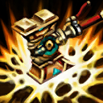
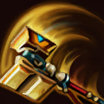
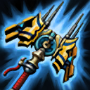

核心裝備
 妖夢鬼刀
妖夢鬼刀 魔劍正宗
魔劍正宗 席利妲咒怨
席利妲咒怨 夜色緣界
夜色緣界 守護天使
守護天使

以下為本站 7.2d 校正後的標準配置；實戰仍需依敵方陣容調整。


技能優先：Q > W > E
切換武器型態後短暫提高跑速，讓近遠型態連招更流暢。

戰鎚型態跳向敵人造成範圍傷害與緩速；加農型態發射電磁彈，穿過加速門可提高速度、距離與傷害。
戰鎚型態產生電場並回復魔力；加農型態大幅提高接下來數次普攻的攻速。

戰鎚型態擊退敵人並依最大生命造成傷害；加農型態放置加速門，提高友軍跑速並強化電磁脈衝。

在水星加農與水星戰鎚間切換，改變技能組、攻擊距離與首次普攻效果。
加農3技加速門 → 加農1技電磁砲 → 借加速門調位
先放加速門再發射電磁砲可提升速度、射程與傷害；門的位置也要讓自己能取得跑速。
加農1技消耗 → 加農2技超頻 → 切換戰鎚 → 戰鎚1技跳擊 → 戰鎚2技電場 → 戰鎚3技擊退
遠程先壓血並開攻速，再切近戰跳入；最後用擊退結束換血，避免留在對方技能範圍。
切換戰鎚 → 1技貼近 → 2技持續傷害 → 3技擊退 → 切回加農 → 加速門撤退
敵人突進時可用戰鎚反打一套，擊退後切回遠程並利用加速門拉開，重新建立安全距離。
利用加農型態普攻與加速門電磁砲取得線權，對手接近時切戰鎚打短爆發再擊退。魔力與女神之淚層數要同步管理。7.2b 基礎物防降至 37，被近身後更容易掉血，遠程消耗後要更早拉開。
物件團前先以加速門一技消耗，壓低血量後再切近戰進場。近戰三技擊退可中斷突進，也能把敵人推向隊友。
不要在沒有視野時盲目切近戰，先維持遠程炮擊。確認敵方核心被壓低或控制後，再用型態切換跑速與戰鎚一技完成收割。
對局名單是本站依英雄機制與目前配置整理的參考，不等同固定勝率。
中路優先處理爆發、控制與抗性問題；標準輸出核心不因單一威脅整套推翻。
觸發：對線或團戰有能直接貼近你的刺客／爆發核心，常在完成第一輪輸出前死亡。
魔提斯深淵提供魔防與低血量魔法護盾，比單純增加輸出更能保住進場或持續輸出。
觸發：敵方有多個關鍵硬控，會讓你無法安全站位或施放完整連段。
先購買水銀飾帶取得主動解控，之後再合成水星彎刀；水銀飾帶是合成組件，不是另一件要與水星彎刀互換的成裝。
犧牲部分輸出型傳奇符文，換取韌性與緩速抗性。
觸發：敵方前排多，團戰需要你持續處理高生命目標，而不是只秒後排。
斷切能直接提高對高生命敵人的普攻傷害。
觸發：敵方治療、吸血或回復讓你的消耗與爆發很難真正壓低血線。
生化龐克鏈鋸之劍提供物攻、生命與技能加速，適合近戰物理角色補重創。
觸發：敵方核心已經針對你的主要傷害類型堆高物防或魔防。
你不是隊伍主要穿透來源，或標準配置已經有足夠百分比穿透／削抗。
提醒：「坦克多」看的是高生命前排；「抗性高」則是對方已經明確堆高物防／魔防，兩種情境不一定相同。
7.2b 平衡更新（v79.4）：基礎物防由 46 降至 37，前期遠程換血與被突進後的容錯下降。｜7.2a 中路第三批正式版：技能名稱與核心機制沿用 Riot Games 台灣《激鬥峽谷》已校正資料；版本基準採官方 7.2 與 7.2a 更新公告，出裝、符文與對局方向參考 7.2a 當前中路環境後整合。Tier 維持本站既有 46 位中路正式名單評級。｜v61：完整套用阿璃中路固定母版。
本站於 2026-08-27 依 Patch 7.2d 重新檢查此配置。 Tier、出裝、符文與對局屬於 Wild Rift Guide 的整理與分析，不是 Riot Games 官方推薦；版本改動後會再依官方公告與實戰資料校正。